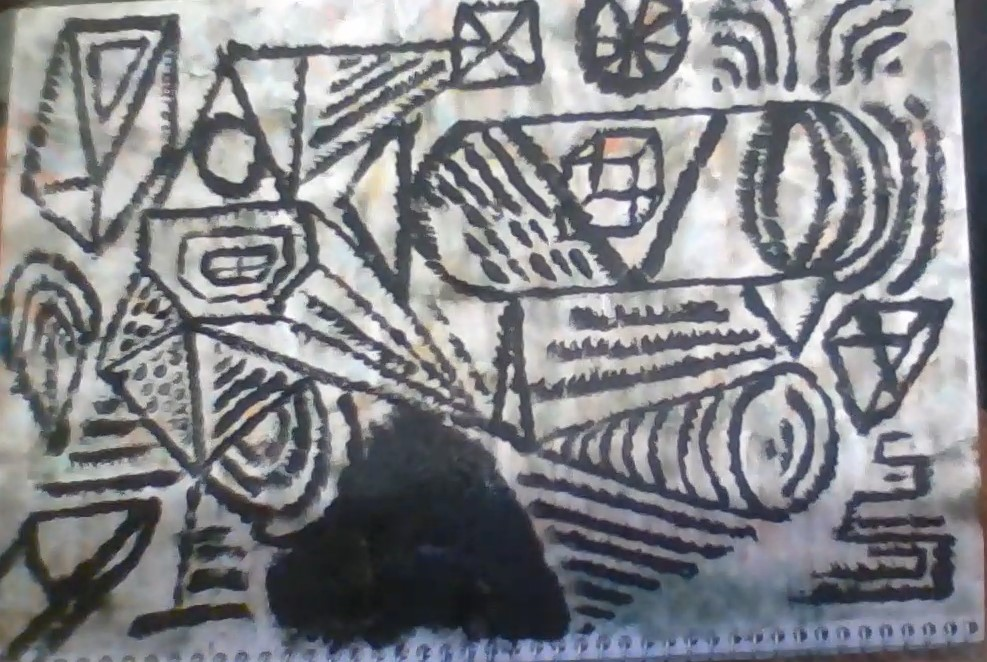

Wes's E-Portofolio

The girl dumped him but it became clear over time that it was her loss
He came to know his worth as a true boss.
Even though he still loved her and was heart broken for years,
the wound eventually healed and he became gay like a happy rainbow queer.
He was humble in nature and spirit as a god connected light being.
He disavowed whores in the pursuit of angelic beings.
Seeing none, yet believing in the unseen spiritual world.
All of its entities, both demonic and angelic.
Remember, the war between good and evil rages within and without.
Remember, all of this world is an illusion and none of it is real.
He broke his two week nofap streak and was sad for a few days
but recovered. He won't give up as he knows bliss is his to claim.
A young boy turns into a man.
Eighteen. Nineteen maybe between twenty or thirty
believe me, my mind is not dirty, but pure
and clean like an infant's. Scant earnings,
but spiritually rich, ditch the paper chase
what lies within a coin, nothing but
special configurations of atoms, gold, steel, iron,
used to make sirens that blast through the night.
mine the might of the earth,
shine lights of minerals,
copper carries electrons energized,
over and across doves long limbs curl
around cold cords, wires cables
carrying electric ectasy, life, particles rush under
pink tissue, undulating intenstinal, gripping tows
buzzing with illness. who who who-------
Allahu Akbar
I said yo its G man,
pass that can, of whatever
you got, i'll gulp it down
yeah you'll catch me around,
downtown cruising slow on the
8 speed, maybe puffing definitely
sayin whassup to a g man g man
G man
Yo it's G man here to stay
here to take your pain away
Yo its G man here to stay
here to take your pain away
Find me chilling by the bay
all way the down shattuck
I bike to jobs and complete
haters made obsolete
throw a toss take a loss
Yo yo yo it's G man here to stay
here to take your pain away
王女の城
烏と鷹
戦争の声
僕、「ジーマンだ」言った.僕達はバスケットボールをしていた。
ジーマンがバースケットボールコートに来た。
ジーマン、何のために来たか？僕、彼に、聞いた。
「痛みを捨てるのために」ジーマンは言った。
ジーマンが一手でバスケットボールを打ち込んだ。
））））））））＿＿＿ すううしゅうううううーー（（（（
バスケットボールが下に行っていた。
三。
The ocean is lonely and
wants to bless your soul with love, salt
that has gone up and down upon waves
from africa, from the ivory coasts.
paranoia evades those who percieve
the soft flap of leaves in the air
IT'S NOW-A-CLOCK!!! I shouted, as the ball went
swoo-oo-shh Behind the back left handed swoosh
from outer space don't waste time, rhyme, shoot
you know you want to, man, you know you want to man
take two, three, maybe four
you know I'm gonna score
don't boast be honest like Abe
Lincoln baby son? Don't have one
but if I did I'd yell IT'S NOW-A-ClOCK!!!
Romance and circumstance
Inhale life, strife
Reflect, connect
missing pieces
I said, YO, as I strode up to the court and sunk a one handed three, setting my backpack down on the bench.
The three players in front of me looked astonished
The ball hit the ground, check ball.
No stalls in my game pure stamina, sure to sweat
don't bet against me odds are you'll lose
too smooth for the news, ladies I choose from a
wide selection, I'm a candidate for election
an erection or a sign of male ferility,